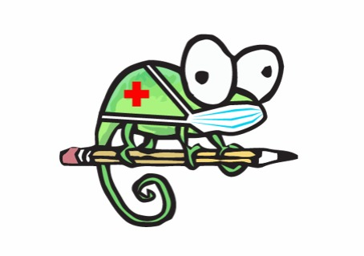

The Covid-19 pandemic has brought it's misery well into 2020, and frankly, the major concern besides widespread infection right now is what we call "the economy". 7.5 million small businesses were at the brink of closing down due to the virus, and more than 100,000 closed down permanently. However, as we transition from spring to summer, summer to fall, businesses are opening up their communications, and their operations in order to survive and resist the continuously diminishing savings. Consumers look bright, disregarding certain health regulations every day, to produce and then consume. However, the economy is at a level comparable to historic economic pits. Businesses need a strategy to survive, they need to put on their digital genius, they need insights on the dynamic demand in the economy, and most importantly, safe engagement. Now, business meetings and communications need a strategy along with certain amount of precaution because there is no argument against the established fact that social gathering spreads the virus. How these businesses are implementing communication can be found a number of lines below.

The WHO has taken it upon themselves to compel the executives to answer the question of whether a face-to-face meeting is needed, and whether the number of people attending the meeting can be scaled down. It has asked the business authorities to verify information concerning meetings and various operations and co-operate with communication channels partnering with public health authorities, in advance. All organizers, participants, caterers at the event should provide contact details: mobile telephone number, email and address where they are staying. It should be made clear that their details will be shared with local public health authorities if any participant becomes ill with a suspected infectious disease. If they do not agree to this, they are bound not to attend the event or meeting. All businesses should partner up with healthcare providers and furthermore stay in contact (well, not physical) with them. Their contact info should be retained for at least one month, in order to trace a possible Covid-19 case. All the participants should be informed with regards to updates concerning possible cases originating at the meeting. All these regulations have been implemented by the WHO, and though they may look simply obvious, they're crucial for the businesses. Also, all employees travelling must maintain every single regulation implemented by the WHO on intra/international travelling.
Now, coming to an end on the regulations, every company is compelled to promote alarmed teleworking across their organization. If there is an outbreak of COVID-19 in that particular community the health authorities may advise people to avoid public transport along with crowded places. Teleworking will help the businesses keep operating while the employees stay safe. Ah, too much of the regulations already. But, yes, all the giant MNCs and companies have developed business continuity contingencies and plans to deal with a fiasco or misfortune.
For businesses especially, strategic communication in these troubled times has become not an obstacle, but an entire obstacle course. In early April this year, the term Zoombombing was making the rounds: board meetings and strategy conferences for companies around the world were being intruded upon by teenagers, in the modern equivalent of ringing the doorbell and running.
Strategic communications in the coronavirus age are a huge challenge. The question of whether businesses can overcome this hurdle, though, has the very simple answer of 'depends'. For example, a wide range of companies are using the pandemic to grow their userbase and foster goodwill through rather clever applications of strategic communication.
In terms of advertising, a universally-shared experience like COVID-19 is a veritable gold mine. We've all seen the examples of COVID-influenced changes to the logos of F500 Companies. McDonalds separating the arches in its M, Audi and the Olympics' unlinked rings, both to demonstrate the need of social distancing; while Notepad++'s switch to a masked chameleon mascot has received much appreciation from the programming community. While purists might look down on advertising as "pseudo strategic communication", the way these companies have found ways to incorporate the need of the hour into the core of their design and marketing is nothing short of genius, and the very definition of pushing and delivering concepts and news through strategic routes.
But moving back to the core of what is conventionally meant by strategic communications, the need for the communication and discussion of confidential and often rather secretive information through digital means poses a bit of a security risk. It's a commonly accepted trend that, especially in the digital arena, the tools of attack will always be stronger than the tools of defence. Given this, businesses always run the risk of competitive secrets, or even worse (or better?) their illicit practices, leaking out. This is a problem compounded by the fact that Zoom, the rather shady video communications company which, even more shadily, suddenly rose to the top of the market during the lockdown, is itself facing allegations of acting as spyware, sending supposedly secure data to Facebook and similarly shady data-based companies, and naturally the media scrutiny that arises from its general shadiness.
Multiple businesses worldwide have found ways to leverage digital communications and the features of the post-pandemic landscape to their advantage, though. Look at Zoom itself for example. Despite the constant supply of echo-chamber-liberals calling it shady, and despite the collective and very resourceful consciousness of the internet bearing it no goodwill, Zoom has managed to keep its own communications quite secure, going against the grain of start-ups thrust into the spotlight falling victim to leaks and breaches.
Strategic communication, to put it simply, is an art. In the age of COVID-19, this art has mutated and changed, but at its core it is still the same idea of effective communication with a purpose that makes it so important in our lives.